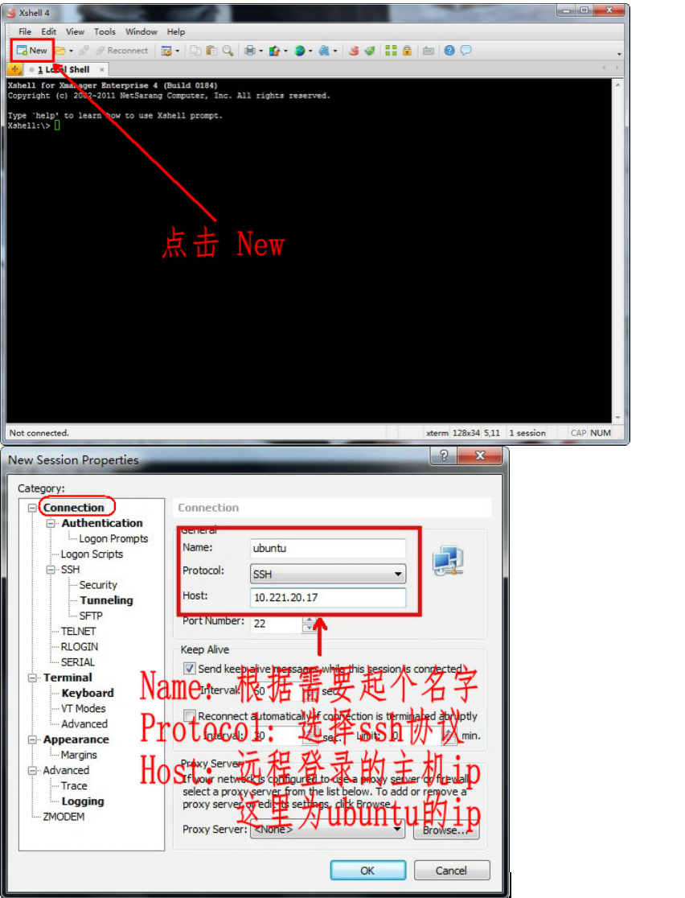
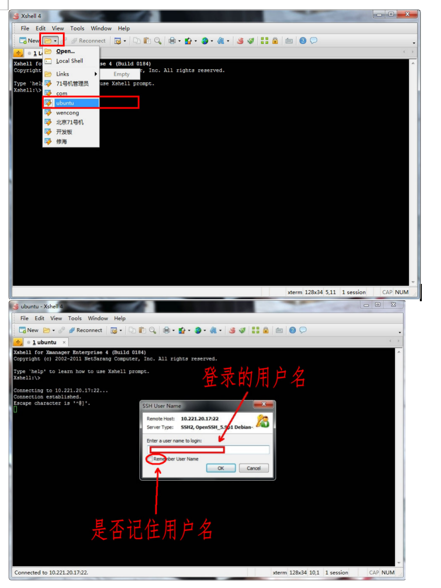
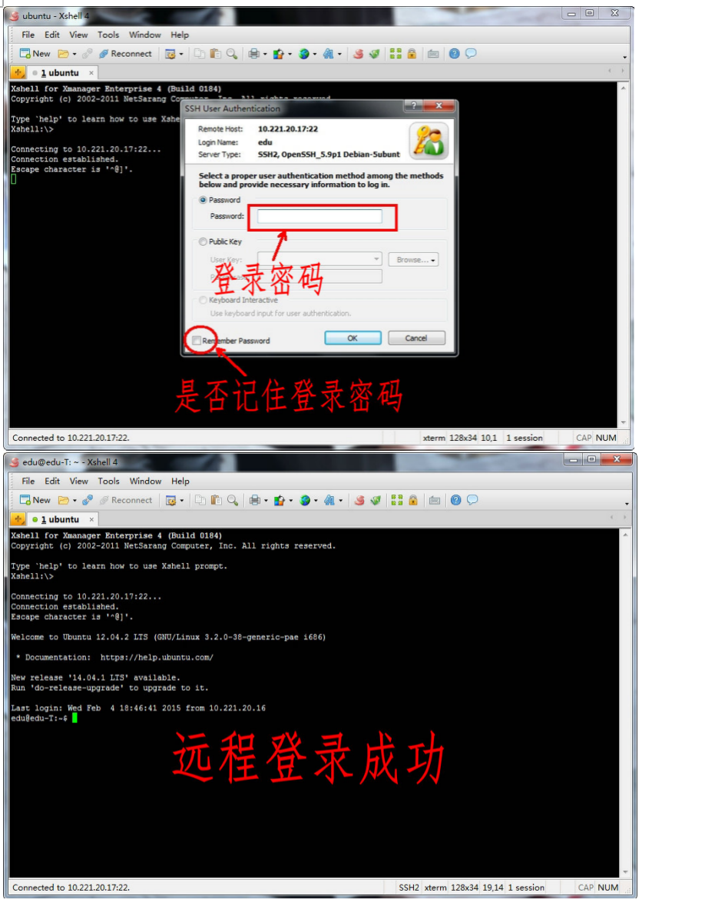
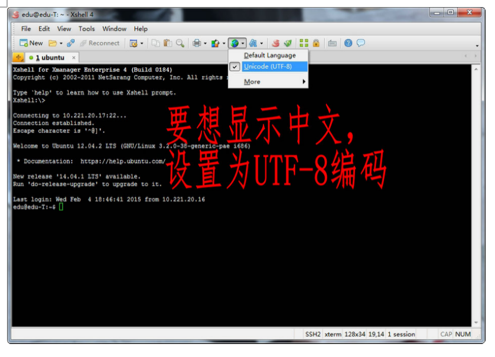

1. SSH介绍
SSH为Secure Shell的缩写，由 IETF 的网络工作小组（Network Working Group）所制定；SSH 为建立在应用层和传输层基础上的安全协议。
SSH是目前较可靠，专为远程登录会话和其他网络服务提供安全性的协议。常用于远程登录，以及用户之间进行资料拷贝。
利用SSH协议可以有效防止远程管理过程中的信息泄露问题。SSH最初是 UNIX 系统上的一个程序，后来又迅速扩展到其他操作平台。SSH 在正确使用时可弥补网络中的漏洞。SSH 客户端适用于多种平台。几乎所有 UNIX 平台—包括 HP-UX、Linux、AIX、Solaris、Digital UNIX、Irix，以及其他平台，都可运行SSH。
使用SSH服务，需要安装相应的服务器和客户端。客户端和服务器的关系：如果，A机器想被B机器远程控制，那么，A机器需要安装SSH服务器，B机器需要安装SSH客户端。
2. 远程登录
2.1. Linux平台相互远程
操作命令：ssh -l username hostip
- 参数 含义
- -l 选项， 是字母“l”，不是数字“1”
- username 被远程登录的用户名
- hostip 被远程登录的ip地址
注意：远程登录的两台机器必须要能ping通（平通）。
首先，查看需要被远程机器的ip：

远程登录(这里是用户 wencong ( A 机器 ) 远程登录 edu ( B 机器 ) )， 可以不用sudo ：
SSH 告知用户，这个主机不能识别，这时键入"yes"，SSH 就会将相关信息，写入" ~/.ssh/know_hosts" 中，再次访问，就不会有这些信息了。然后输入完口令,就可以登录到主机了。
接着，提示输入登陆密码：
登陆成功：
2.2. Windows远程登录Linux
如果想在 Windows 平台下远程登录 Linux，这时候，Windows 需要安装 安装相应软件包。这里介绍是Xmanager。
Xmanager是一款小巧、便捷的浏览远端X窗口系统的工具。它包含Xshell、Xftp等软件：
- Xshell：是一个Windows平台下的SSH、TELNET和RLOGIN终端软件。它使得用户能轻松和安全地在Windows平台上访问Unix/Linux 主机。
- Xftp：是一个应用于 Windows 平台的 FTP 和 SFTP 文件传输程序。Xftp能安全地在Unix/Linux 和 Windows 平台之间传输文件。
配置Xshell，远程登录：
   Linux默认采用的编码格式是UTF-8，Windows默认采用的编码格式是ANSI(GB2312、GBK)，所以需要设置一下相应编码： 
3. 远程传输文件
3.1. Linux平台相互传输
SSH 提供了一些命令和shell用来登录远程服务器。在默认情况下，不允许用户拷贝文件，但还是提供了一个“scp”命令。
| 参数 | 含义 |
|---|---|
| RemoteUserName | 远程用户名 |
| RemoteHostIp | 远程ip |
| RemoteFile | 远程文件，可带上路径 |
| FileName | 拷贝到本地后的名字，可带上路径，不带路径拷贝到当前目录 |
3.1.1. 本地文件复制到远程：
scp FileName RemoteUserName@RemoteHostIp:RemoteFile
scp FileName RemoteHostIp:RemoteFolder
scp FileName RemoteHostIp:RemoteFile
3.1.2. 本地目录复制到远程：
scp -r FolderName RemoteUserName@RemoteHostIp:RemoteFolder
scp -r FolderName RemoteHostIp:RemoteFolder
3.1.3. 远程文件复制到本地：
scp RemoteUserName@RemoteHostIp:RemoteFile FileName
scp RemoteHostIp:RemoteFolder FileName
scp RemoteHostIp:RemoteFile FileName
3.1.4. 远程目录复制到本地：
scp -r RemoteUserName@RemoteHostIp:RemoteFolder FolderName
scp -r RemoteHostIp:RemoteFolder FolderName
拷贝远程的文件：

拷贝远程的文件可以指定存放路径：

3.2. Windows和Linux相互传输文件
Xmanager自带的Xftp是一个应用于 Windows 平台的 FTP 和 SFTP 文件传输程序。Xftp能安全地在Unix/Linux 和 Windows 平台之间传输文件。